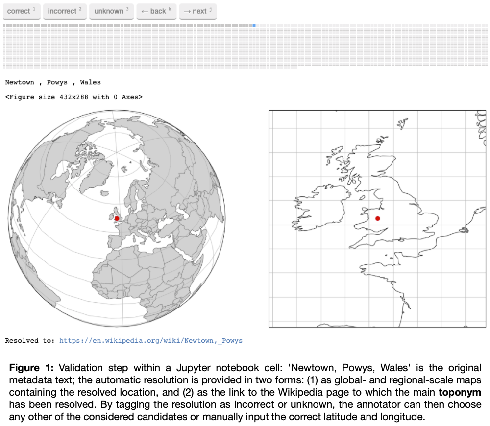
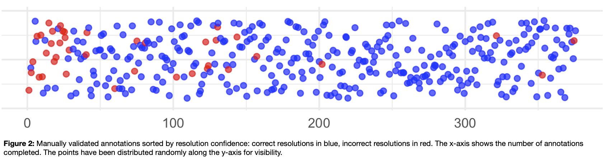

Introduction
Geographic information is a key component in the description of collection objects, and yet its format is often unsuited for use with methods of geographic analysis. Catalogue entries are often inconsistent, in plain text, and without geographic coordinates (much less coordinates linked to authority records). Georesolution of the relevant fields (by matching text strings to citable external resources which do have spatial coordinates) makes catalogue data machine-readable and allows collection exploration that more fully takes the geographic dimension of metadata into account.
Geographic metadata analysis requires a very high-quality resolution of the relevant metadata fields. However, georeferencing by hand is highly time-consuming, and both state-of-the-art georesolution systems and off-the-shelf geocoders achieve highly varying performance depending on the datasets they are applied to (Gritta 2019, DeLozier 2015, Alex 2015). Here, we propose a strategy to resolve place names in metadata that uses an active learning method based on heterogeneous uncertainty sampling (Lewis and Catlett 1994). This method, which we call “smart annotation” (because it depends on selective human feedback), significantly reduces the number of manual annotations by actively querying the user only for less certain matches. We applied this method to the British Library (BL) newspaper title catalogue and obtained 25,000 high-quality georeferenced records in less than three hours.
The value of geographic newspaper metadata
The BL holds about 37,000 newspaper titles, of which 25,000 are from inside the UK and Ireland. BL newspaper titles are catalogued with geographic metadata in plain text, including country, county, and city. This metadata does not use a controlled vocabulary, and the city and county are not necessarily separated hierarchically. According to Tim Sherratt, the value of digitised newspapers collections is that we can use the 'granularity of newspapers to expose the local, the particular, the personal and the ephemeral' (Sherratt 2015). The nineteenth-century newspaper landscape of the UK was particularly based around local and regional titles (Hobbs 2018). Geographic analysis using computational methods requires that the geographic data is correct: if we are to understand the local and regional differences of our collection items, they must be correctly and systematically resolved to a place.
Method
The "smart annotation" pipeline consists of two steps: an automatic resolution step and an interactive curation step.
The first step follows a traditional toponym resolution process: we preprocess the relevant geographic metadata fields to obtain the main toponym and (potentially) a list of context toponyms that help to disambiguate the location of the main toponym. For example, given the two columns “Annan, Dumfries & Galloway” and “Scotland, UK”, we consider “Annan” as the main toponym and “Dumfries”, “Galloway”, “Scotland”, and “UK” as context toponyms. Using a Wikipedia-based gazetteer enhanced with information from Geonames, we select for each toponym (main or context) all potential candidates that might be their true referent, and attempt to resolve the true location of the main toponym taking the following features into account for each candidate:
Confidence of the candidate referring to the toponym, depending on the source from which it has been obtained (Wikipedia page, Wikipedia redirection, Geonames altnames, etc),
Relevance of main and context toponym candidates,
Geographic distance between the different context toponym candidates with respect to the main toponym candidates,
Whether the candidate location is in the country of the collection (UK in the case of the BL newspaper titles collection).
The best candidates are selected through a scoring function that combines the different features to obtain the most likely resolution. We use this scoring function to calculate a confidence score for each main resolved toponym. This confidence score is then passed to the second step, in which results from the resolution process are uploaded to a Jupyter notebook where the annotator can validate each resolution and correct it if required

, we use the ipyannotate Jupyter Widget for data annotation: https://github.com/ipyannotate/ipyannotate). The results to be annotated are sorted from low to high confidence, ensuring that those resolutions for which the system was less certain are validated and corrected first.

Results
We have applied smart annotation (resolution, validation, and correction) to the ca. 25,000 newspaper titles from UK and Ireland. It took less than three hours of annotations to achieve an accuracy of 97% (allowing for an error margin of 10 miles between the resolved place and the gold standard).
These results can be used to create accurate maps and conduct further geographic and demographic analysis. They help us to understand, for example, the changing focus of the press from national, to regional, to local. This disambiguation method has the potential to have a large impact on the field of newspaper and periodical studies, as high-quality metadata linked to a standard external resource allows us to understand both the collection and the wider newspaper landscape. Ultimately, the goal is to use this information to enhance and enrich existing BL metadata for the benefit of library users, so they can better understand the collection. We demonstrate the value of this technique with a visualisation tool we created using R, Shiny and Leaflet (see Figures 3 and 4).
Resolved geographic metadata can help in understanding the geographic scope of the news collection. It enables the discovery of geographic bias in the digitised portion of a collection and enables collection data to be joined to census data to do demographic analysis. Because newspapers are richly geographical, correctly resolved geographic metadata can aid in the disambiguation of digitised newspaper text. The results presented here are based on the performance of a toponym resolution system (and of a gazetteer) that works well with the kinds of toponyms one can encounter in BL newspaper titles metadata: in English, and mostly focused on Great Britain and Ireland. In the future, we intend to apply this method to other metadata collections.
* Code will be available on the Living with Machines GitHub organization: https://github.com/Living-with-Machines
References